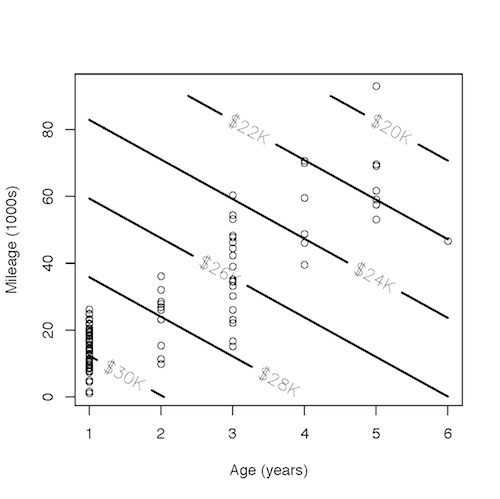
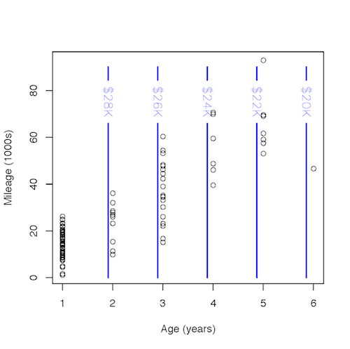
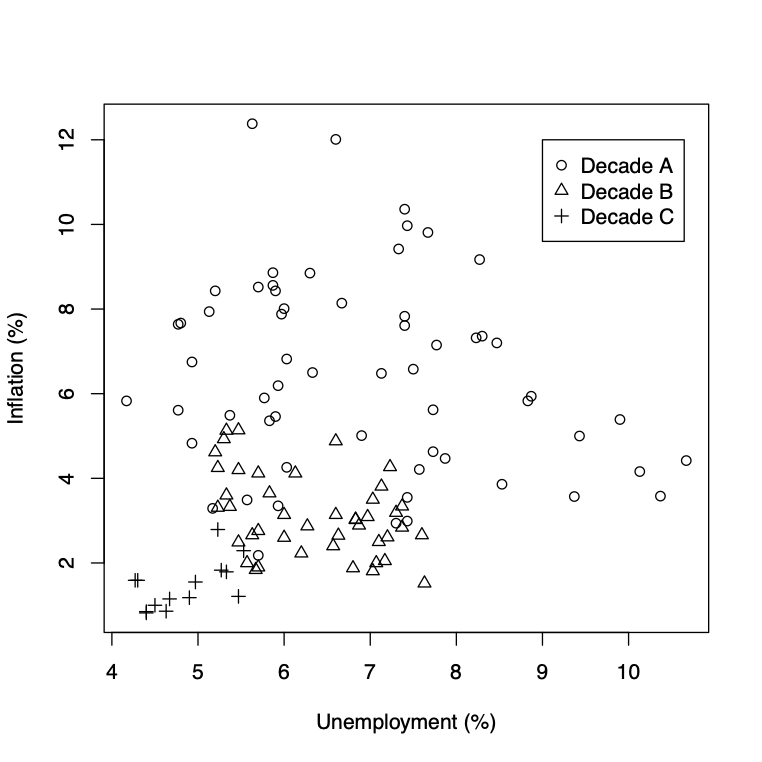

dag_draw(dag01)
28.1 Read a DAG to determine which covariates to include in a model to reduce (out-of-sample) prediction error.
28.2 Calculate amount of in-sample mean square error reduction to be expected with a useless (random) covariate. (Residual sum of squares divided by residual degrees of freedom.)
Consider dag01, which shows a simple causal relationship between two variable.
dag_draw(dag01)
So far as the size of prediction error is concerned, does it matter whether x is used to predict y or vice versa? Show the models and the results you use to come to your conclusion. ::: {.callout-note} ## Solution
:::
Whenever you seek to study a partial relationship, there must be at least three variables involves: a response variable, an explanatory variable that is of direct interest, and one or more other explanatory variables that will be held constant: the covariates. Unfortunately, it’s hard to graph out models involving three variables on paper: the usual graph of a model just shows one variable as a function of a second.
One way to display the relationship between a response variable and two quantitative explanatory variables is to use a contour plot. The two explanatory variables are plotted on the axes and the fitted model values are shown by the contours. Figure 1 shows such a display of the fitted model of used car prices as a function of mileage and age.

The dots are the mileage and age of the individual cars — the model Price is indicated by the contours.
The total relationship between Price and mileage involves how the price changes for typical cars of different mileage.
18000, 21000, 25000, 30000
18000 21000, 25000, 30000
The total relationship between Price and mileage is reflected by this ratio: change in model price divided by change in mileage. What is that ratio (roughly)?
In contrast, the partial relationship between Price and mileage holding age constant is found in a different way, by comparing two points with different mileage but exactly the same age.
22000, 24000, 26000 28000, 30000
22000, 24000, 26000, 28000, 30000
Both the total relationship and the partial relationship are indicated by the slope of the model price function given by the contours. The total relationship involves the slope between two points that are typical cars, as indicated by the dots. The partial relationship involves a slope along a different direction. When holding age constant, that direction is the one where mileage changes but age does not (vertical in the graph).
There’s also a partial relationship between price and age holding mileage constant. That partial relationship involves the slope along the direction where age changes but mileage is held constant. Estimate that slope by finding the model price at a point where age is 2 years and another point where age is 5 years. You can pick whatever mileage you like, but it’s key that your two points be at exactly the same mileage.
The contour plot in Figure 1 depicts a model in which both mileage and age are explanatory variables. By choosing the direction in which to measure the slope, one determines whether the slope reflects a total relationship (a direction between typical cars), or a partial relationship holding age constant (a direction where age does not change, which might not be typical for cars), or a partial relationship holding mileage constant (a direction where mileage does not change, which also might not be typical for cars).
In calculus, the partial derivative of price with respect to mileage refers to an infinitesimal change in a direction where age is held constant. Similarly, the partial derivative of price with respect to age refers to an infinitesimal change in a direction where mileage is held constant.
Of course, in order for the directional derivatives to make sense, the price function needs to have both age and mileage as explanatory variables. Figure 2 shows a model in which only age has been used as an explanatory variable: there is no dependence of the function on mileage.

Such a model is incapable of distinguishing between a partial relationship and a total relationship. Both the partial and the total relationship involve a ratio of the change in price and change in age between two points. For the total relationship, those two points would be typical cars of different ages. For the partial relationship, those two points would be different ages at exactly the same mileage. But, because the model depend on mileage, the two ratios will be exactly the same.
In each of the following, a situation is described and a question is asked that is to be answered by modeling. Several variables are listed. Imagine an appropriate model and identify each variable as either the response variable, an explanatory variable, a covariate, or a variable to be ignored.
EXAMPLE: Some people have claimed that police foot patrols are more effective at reducing the crime rate than patrols done in automobiles. Data from several different cities is available; each city has its own fraction of patrols done by foot, its own crime rate, etc. The mayor of your town has asked for your advice on whether it would be worthwhile to shift to more foot patrols in order to reduce crime. She asks, “Is there evidence that a larger fraction of foot patrols reduces the crime rate?”
Variables:
Answer: The question focuses on how the fraction of foot patrols might influence crime rate, so crime rate is the response variable and fraction of foot patrols is an explanatory variable.
But, the crime rate might also depend on the overall level of policing (as indicated by the number of policemen), or on the social conditions that are associated with crime (e.g., demographics). Since the mayor has no power to change the demographics of your town, and probably little power to change the overall level number of policemen, in modeling the data from the different cities, you would want to hold constant number of policemen and the demographics. You can do this by treating number of policemen and demographics as covariates and including them in your model.
Fifteen years ago, your state legislature raised the legal drinking age from 18 to 21 years. An important motivation was to reduce the number of car accident deaths due to drunk or impaired drivers. Now, some people are arguing that the 21-year age limit encourages binge drinking among 18 to 20 year olds and that such binge drinking actually increases car accident deaths. But the evidence is that the number of car accident deaths has gone down since the 21-year age restriction was introduced.
You are asked to examine the issue: Does the reduction in the number of car-accident deaths per year point to the effectiveness of the 21-year drinking age?
Variables:
Which is it? response explanatory covariate ignore
Which is it? response explanatory covariate ignore
Which is it? response explanatory covariate ignore
Which is it? response explanatory covariate ignore
Which is it? response explanatory covariate ignore
Of direct interest is how the drinking age limit accounts for the number of deaths, so these are, respectively, explanatory and response variables. But a lower death rate might also be explained by increased use of seat belts and of air bags; these can prevent deaths in an accident and they have been increasing over the same period in which the 21-year age limit was introduced.
In examining how the drinking age limit might affect the number of deaths, it might be important to hold these other factors constant. So, seat belts and air bags should be covariates included in the model.
The number of accidents is different. It seems plausible that the mechanism by which drunk driving causes deaths is by causing accidents. If the number of accidents were included as a covariate, then the model would be examining how the death rate changes with drinking age when {} even though the point is that the higher drinking age might reduce the number of accidents. So, number of accidents ought to be left out of the model.
Your state government wants to guide citizens in choosing physicians. As part of this effort, they are going to rank all the surgeons in your state. You have been asked to build the rating system and you have a set of variables available for your use. These variables have been measured for each of the 342,861 people who underwent surgery in your state last year: one person being treated by one doctor. How should you construct a rating system that will help citizens to choose the most effective surgeon for their own treatment?
Variables:
Which is it? response explanatory covariate ignore
Which is it? response explanatory covariate ignore
Which is it? response explanatory covariate ignore
Which is it? response explanatory covariate ignore
The patient has a choice of doctors and wants to have the best possible outcome. So the model needs to include surgeon as an explanatory variable and outcome score as the response.
A simple model might be misleading for informing a patient’s choice. The best doctors might take on the most difficult cases and therefore have worse outcomes than doctors who are not as good. But the patient’s condition doesn’t change depending on what doctor is selected. This means that the difficulty of the case ought to be included as a covariate. The model would thus tell what is the typical outcome for each surgeon adjusting for the difficulty of the case, that is, given the patient’s condition.
Another variable that might explain the outcome is the experience of the surgeon; possibly more experienced surgeons produce better outcomes. However, experience of the surgeon
should not be included in the model used to inform a patient’s choice. The reason is that the patient’s choice of a doctor already reflects the experience of that doctor. From the patient’s point of view, it doesn’t matter whether the doctor’s outcomes reflect a high level of talent, a lot of experience, or superior training.
The choice of variables and covariates depends on the purpose of the model. If the purpose of the model were to decide how much experience to require of doctors before they are licensed, then an appropriate model would have outcome as the response, experience as the explanatory variable, and difficulty of the case and surgeon as covariates.
Last year, your school district hired a new superintendent to ``shake things up.’’ He did so, introducing several controversial new policies. At the end of the year, test scores were higher than last year. A representative of the teachers’ union has asked you to examine the score data and answer this question: Is there reason to think that the higher scores were the result of the superintendent’s new policies?
Variables:
Which is it? response explanatory covariate ignore
Which is it? response explanatory covariate ignore
Which is it? response explanatory covariate ignore
The issue of direct interest is whether the policies of the new superintendent might have influenced the test scores, so the model should be test scores as the response and superintendent as an explanatory variable. Of course, one possible mechanism that might have improved the scores, outside of the influence of the superintendent’s policies, is the test itself. If it were easier this year than last year, then it wouldn’t be surprising that the test scores improved this year even if the superintendent’s policies had no effect. So exam difficulty should be a covariate to be included in the model.
In a bizarre twist of time, you find yourself as Galileo’s research assistant in Pisa in 1605. Galileo is studying gravity: Does gravity accelerate all materials in the same way, whether they be made of metal, wood, stone, etc.? Galileo hired you as his assistant because you have brought with you, from the 21st century, a stop-watch with which to measure time intervals, a computer, and your skill in statistical modeling. All of these seem miraculous to him.
He drops objects off the top of the Leaning Tower of Pisa and you measure the following:
Variables
Which is it? response explanatory covariate ignore
Which is it? response explanatory covariate ignore
Which is it? response explanatory covariate ignore
Galileo wants to know how the material affects the time of fall of the object. These are the explanatory and response variables respectively. But the size of the object also has an influence, due to air resistance. For instance, a tiny ball will fall more slowly than a large ball. So the size of the object should be a covariate.
##28.D
Polling organizations often report their results in tabular form, as in Figure 3. The basic question in the poll summarized in Figure 3 asked whether the respondant agrees with the statement, “The US was a better place to live in the 1990s and will continue to decline.”

The response variable here is “pessimism.” In the report, there are three explanatory variables: race/ethnicity, income, and age. The report’s breakdown is one explanatory variable at a time, meaning that it considers “total change” rather than “change holding other factors constant.” This can be misleading when there are connections among the explanatory variables. For instance, relatively few people in the 18 to 29 age group have high incomes.
Pollsters rarely make available the raw data they collected. This is unfortunate because it prevents others from looking at the data in different ways. For the purpose of this exercise, you’ll use simulated data in the frame math300::Econ_outlook_poll. Of course, the simulation doesn’t necessarily describe people’s attitudes directly, but it does let you see how the conclusions drawn from the poll might have been different if the results for each explanatory variable had been presented in a way that adjusts for the other explanatory variables.
Construct the model pessimism ~ age - 1. Look at the coefficients and choose the statement that best reflects the results. (In case you’re wondering: The -1 is convenient when the explanatory variable is categorical. It ensures that a coefficient is reported for each level of the age variable. You’ll have to compare coefficients for different age groups to see a trend.)
Middle aged people have lower pessimism than young or old people.
Young people have the least pessimism.
There is no relationship between age and pessimism.
Now construct the model pessimism ~ income - 1. Look at the coefficients and choose the statement that best reflects the results:
Higher income people are more pessimistic than low-income people.
Higher income people are less pessimistic than low-income people.
There is no relationship between income and pessimism.
Construct a model in which you can look at the relationship between pessimism and age while adjusting for income. That is, include income as a covariate in your model. Look at the coefficients from your model and choose the statement that best reflects the results:
Holding income constant, older people tend to have higher levels of pessimism than young people.
Holding income constant, young people tend to have higher levels of pessimism than old people.
Holding income constant, there is no relationship between age and pessimism.
You can also interpret that same model to see the relationship between pessimism and income while adjusting for age. Which of the following statements best reflects the results? (Hint: make sure to pay attention to the sign of the coefficients.)
Holding age constant, higher income people are more pessimistic than low-income people.
Holding age constant, higher income people are less pessimistic than low-income people.
Holding age constant, there is no relationship between income and pessimism.
A study1 on drug D indicates that patients who were given the drug were less likely to recover from their condition C. Here is a table showing the overall results:
| Drug | # recovered | # died | Recovery Rate |
|---|---|---|---|
| Given | 1600 | 2400 | 40% |
| Not given | 2000 | 2000 | 50% |
Strangely, when investigators looked at the situation separately for males and females, they found that the drug improves recovery for each group:
Sex | Drug | num recovered | # died | Recovery Rate :—-::———|—–:|—–:|——: Sex | Drug | num recovered | # died | Recovery Rate Females| Given | 900 | 2100 | 30% | Not given | 200 | 800 | 20% e | | | |
Males | Given | 700 | 300 | 70% | Not given | 1800 | 1200 | 60%
Are the two tables consistent with one another in terms of the numbers reported?
Does the drug improve recovery or hinder recovery?
What advice would you give to a physician about whether or not to prescribe the drug to her patients? Give enough of an explanation that the physician can judge whether your advice is reasonable.
Economists measure the inflation rate as a percent change in price per year. Unemployment is measured as the fraction (percentage) of those who want to work who are seeking jobs.
According to economists, in the short run — say, from one year to another — there is a relationship between inflation and unemployment: all other things being equal, as unemployment goes up, inflation should go down. (The relationship is called the “Phillips curve,” but you don’t need to know that or anything technical about economics to answer this question.)
Inflation ~ Unemployment, what should be the sign of the coefficient on Unemployment? positive, zero, negative
But despite the short term relationship, economists claim that In the long run — over decades — unemployment and inflation should be unrelated.
Inflation ~ Unemployment, what should be the sign of the coefficient on Unemployment? positive, zero, negative}
The point of this exercise is to figure out how to arrange a model so that you can study the short-term behavior of the relationship, or so that you can study the long term relationship.
For your reference, Figure 4 shows inflation and unemployment rates over about 30 years in the US. Each point shows the inflation and unemployment rates during one quarter of a year. The plotting symbol indicates which of three decade-long periods the point falls into.

The relationship between inflation and unemployment seems to be different from one decade to another — that’s the short term.
Using the modeling language, express these different possible relationships between the variables Inflation, Unemployment, and Decade, where the variable Decade is a categorical variable with the three different levels shown in the legend for the graph.
Inflation depends on Unemployment in a way that doesn’t change over time.
Inflation ~ Decade
** ~ Inflation ~ Unemployment**
Inflation ~ Unemployment + Decade
Inflation ~ Unemployment * Decade
Inflation changes with the decade, but doesn’t depend on Unemployment.
** ~ Inflation ~ Decade**
Inflation ~ Unemployment
Inflation ~ Unemployment + Decade
Inflation ~ Unemployment * Decade
Inflation depends on Unemployment in the same way every decade, but each decade introduces a new background inflation rate independent of Unemployment.
Inflation ~ Decade
Inflation ~ Unemployment
** ~ Inflation ~ Unemployment + Decade**
Inflation ~ Unemployment * Decade
Inflation depends on Unemployment in a way that differs from decade to decade.
Inflation ~ Decade
Inflation ~ Unemployment
Inflation ~ Unemployment + Decade
** ~ Inflation ~ Unemployment * Decade**
Whether a model examines the short-term or the long-term behavior is analogous to whether a partial change or a total change is being considered.
Suppose you wanted to study the long-term relationship between inflation and unemployment. Which of these is appropriate?
Hold Decade constant. (Partial change)
Let Decade vary as it will. (Total change)
Now suppose you want to study the short-term relationship. Which of these is appropriate?
Hold Decade constant. (Partial change)
Let Decade vary as it will. (Total change)
Consider dag03, involving three variables: x, y, g
Let’s take y as the response variable, x as the explanatory variable of interest, and g as a covariate that we might or might not want to include in a model. Consequently, there are two model structures that we can choose between: y ~ x versus y ~ x + g.
x to y or vice versa?No. Even though x and y are connected to one another via g, the path from x to y (or vice versa) is not causal. There is no way to get from x to y (or vice versa) by starting on one of those two nodes and following the links in their causal direction.
Generate a sample of, say, size \(n=1000\) from dag03 and train each of the two models mentioned above on the sample. Examine the 95% confidence intervals on the coefficients and explain which model (if either) is suitable to show that x and y are connected, and which model (if either) shows that there is no causal path between x and y.
The nature of 95% confidence intervals means that even when the true coefficient is zero, 5% of the time the confidence interval will not include zero. In a class with 100 students, around 5 will see this failure to include zero. In order to avoid those students from being fooled by such accidental effects, feel free to analyze 2 or more samples.
Regretably, in the real world, when working with data that have already been collected, you can’t use such multiple samples to check your work. So there is always that 5% chance that a real effect of size zero will produce a confidence interval that doesn’t include zero. This is one reason why replication of results is useful.
This learning challenge is much like LC -@28-G, but uses dag11 instead of dag03.
dag03 and dag11. (You can use dag_draw() to generate the graph.) Are the two DAGs equivalent or not? Describe what differences you see between the two graphs and explain whether those differences are sufficient to make the two DAGs causally different.Let’s take y as the response variable, x as the explanatory variable of interest, and g as a covariate that we might or might not want to include in a model. Consequently, there are two model structures that we can choose between: y ~ x versus y ~ x + g.
x to y or vice versa?No. Even though x and y are connected to one another via g, the path from x to y (or vice versa) is not causal. There is no way to get from x to y (or vice versa) by starting on one of those two nodes and following the links in their causal direction.
Generate a sample of, say, size \(n=1000\) from dag03 and train each of the two models mentioned above on the sample. Examine the 95% confidence intervals on the coefficients and explain which model (if either) is suitable to show that x and y are connected, and which model (if either) shows that there is no causal path between x and y.
Now look at the graph of dag12 and speculate whether the models x ~ y and x ~ y + g will give equivalent results. (Don’t include node h in the models.) Write down your speculation. (No penalty for being wrong, it’s just a speculation!) Then, generate a sample from dag12 and, looking at the 95% confidence intervals on the coefficients, explain whether your speculation was correct or not.
{Based on an example from Judea Pearl (2000) Causality: Models, Reasoning, and Inference, Cambridge Univ. Press, p. 175}↩︎